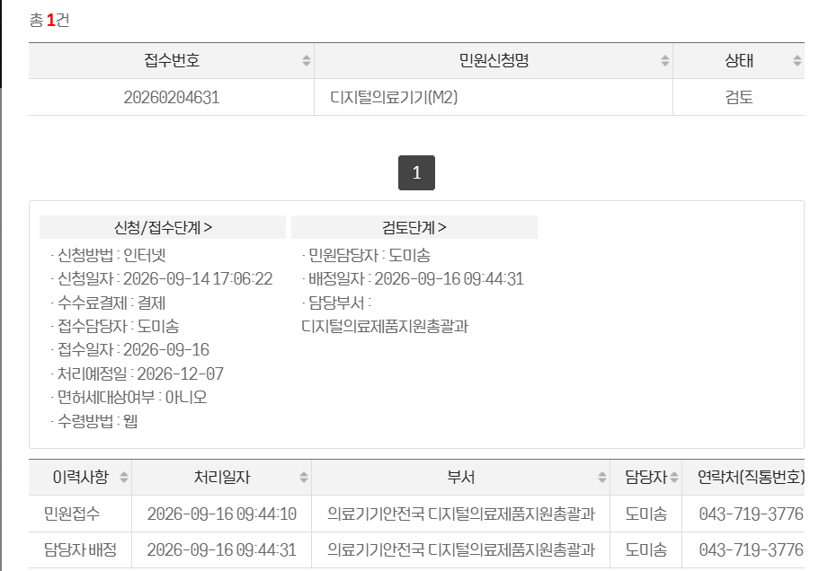
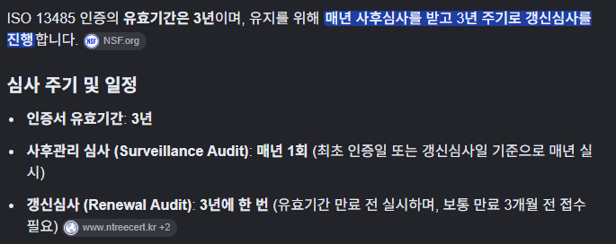

10월 29일 보고 내용
1. M2 – 얼리 부스트 – 사전검토 상황

2. ISO 13485 심사 관련
2-1. 심사 주기
ISO 13485 인증의 유효기간은 3년이며, 유지하려면 매년 사후심사를 받고 3년마다 갱신심사를 받아야 함.

현재 상황: 사후심사 준비 중
2-2. 사후심사 준비 내용
- 품질절차서 내용 수정
- 품질절차서 관련 양식 확보 및 작성

ISO 13485 인증의 유효기간은 3년이며, 유지하려면 매년 사후심사를 받고 3년마다 갱신심사를 받아야 함.
